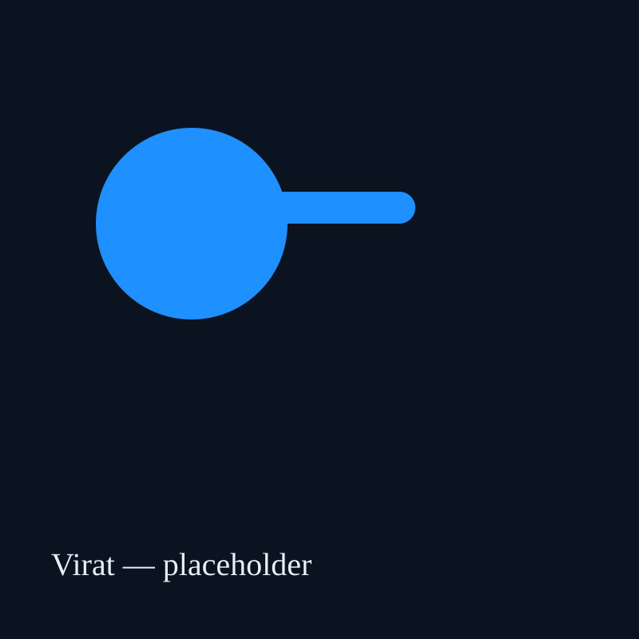
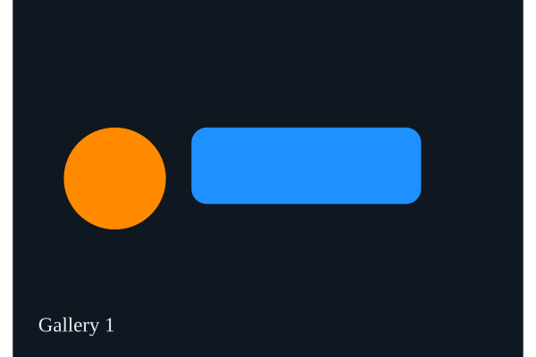
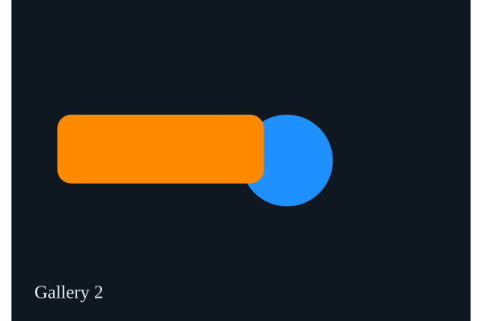
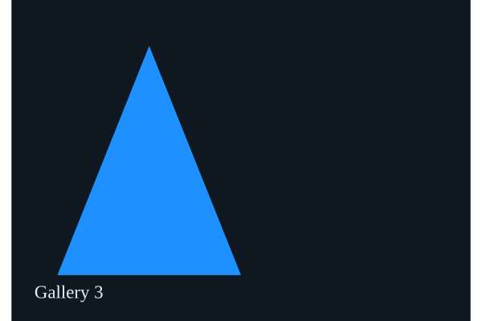

ICC Awards
Multiple ICC recognitions across formats.

Multiple ICC recognitions across formats.
One of the highest century counts in modern cricket.
Fastest to several run milestones in international cricket.
| Matches | 115 |
|---|---|
| Runs | 8580 |
| Avg | 49.5 |
| 100s | 27 |
| Matches | 280 |
|---|---|
| Runs | 13478 |
| Avg | 58.2 |
| 100s | 46 |
| Matches | 115 |
|---|---|
| Runs | 4000 |
| Avg | 50.0 |
| 100s | 1 |



This is a fan-made, open-source profile built to showcase Virat Kohli's career highlights and stats. Stats are a static snapshot and should be updated from official sources for accuracy.
Source & contribute on GitHub: Hgoyal701/VIRAT-18